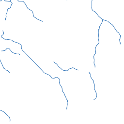

MapCache Quickstart¶
MapCache is a tile server that speeds up access to WMS layers. It can be run as a CGI application under many different web servers, or as an Apache module. OSGeoLive has MapCache installed and configured as an Apache module.
This quick start shows how to add a new WMS layer to a MapCache set-up, display the tile service in an OpenLayers web map, and seed a tile cache from the command line.
Contents
Adding a New Tileset and Displaying in OpenLayers¶
MapCache is configured using XML files. OSGeoLive includes an example configuration file at /usr/local/share/mapcache/mapcache-quickstart.xml.
The example uses the OSGeoLive demo MapServer application of Itasca County in the United States as its source.
In this quick start we will set up tile caching for an additional WMS layer and display the tiles in a simple HTML page containing an OpenLayers map.
First let’s open the MapCache configuration file in FeatherPad - a text editor. Open FeatherPad from the command line with elevated permissions, so you can save the file, using System Tools > QTerminal and then running run the command below:
sudo featherpad
We can see which layers are available in our source WMS server by opening the following link: http://localhost/itasca/?service=wms&request=getcapabilities MapCache is configured to forward on any requests it can’t handle, such as GetCapabilities, to MapServer with the rule shown below:
<forwarding_rule name="catch all">
<http>
<url>http://localhost/cgi-bin/mapserv?map=/usr/local/www/docs_maps/mapserver_demos/itasca/itasca.map</url>
</http>
</forwarding_rule>
One of the layer names listed in the WMS Capabilities document is dlgstln2 - streams for Itasca county. We will add this as a new tileset to the
MapCache service. First we add a <source> block - this is the configuration to retrieve data from the WMS server. Add the following XML block after the
existing <source name="lake_source" type="wms">...</source> block used for the lakes to mapcache-quickstart.xml:
<source name="streams_source" type="wms">
<getmap>
<params>
<FORMAT>image/png</FORMAT>
<LAYERS>dlgstln2</LAYERS>
<MAP>/usr/local/www/docs_maps/mapserver_demos/itasca/itasca.map</MAP>
</params>
</getmap>
<http>
<url>http://localhost/cgi-bin/mapserv?</url>
</http>
</source>
We use the <params> block to pass the WMS layer name, and the image format back to the WMS server, along with the MapServer specific
<map> parameter. The URL to the WMS server is in the <http> block. For documentation on all configuration file elements
see the Configuration Documentation.
Next we will add a <tileset> block, which defines how the source will be stored and served as tiles. Place the following block after
the existing <tileset name="lakes">...</tileset> block.
<tileset name="streams">
<source>streams_source</source>
<cache>disk</cache>
<grid>GoogleMapsCompatible</grid>
<format>PNG</format>
</tileset>
We set the grid type to the inbuilt GoogleMapsCompatible grid used as the default tiling scheme in many web mapping applications.
The name=streams is used by client applications to access the tileset. We are using a disk-based cache (rather than storing tiles in a database or in
a cloud environment).
Anytime you modify the MapCache configuration file you need to reload Apache for the changes to come into effect. This can be run from the command line as follows:
sudo apachectl -k graceful
You should now be able to access a tile with the following URL: http://localhost/itasca/gmaps/streams@GoogleMapsCompatible/12/987/1433.png
{kind=link}
Now let’s add the tileset to our OpenLayers map. Open the HTML page using the following command:
sudo featherpad /var/www/html/mapcache-quickstart/index.html
Uncomment out the JavaScript code below:
,new ol.layer.Tile({
source: new ol.source.XYZ({
url: 'http://localhost/itasca/gmaps/streams@GoogleMapsCompatible/{z}/{x}/{y}.png'
})
})
Now refresh the page at http://localhost/mapcache-quickstart/ - you should see the new streams layer being served by MapCache.

As you browse the map you will see the tile cache folders in /var/cache/mapcache fill with PNG images.

The location and type of the cache is set by the following block in the configuration file:
<cache name="disk" type="disk">
<base>/var/cache/mapcache</base>
<symlink_blank/>
</cache>
Adding New Services¶
You can configure Apache to run as many different MapCache services, each with its own configuration file by editing the
/etc/apache2/conf-enabled/mapcache.conf file. As this requires super user permissions you can open it for editing in FeatherPad by
running the command below:
sudo featherpad /etc/apache2/conf-enabled/mapcache.conf
OSGeoLive has two MapCache services, each with an alias and a configuration file. The alias is the URL to use on the server, e.g. http://localhost/mapcache and http://localhost/itasca
<IfModule mapcache_module>
<Directory /path/to/directory>
Order Allow,Deny
Allow from all
</Directory>
MapCacheAlias /mapcache "/usr/share/doc/libapache2-mod-mapcache/examples/mapcache.xml"
MapCacheAlias /itasca "/home/user/mapcache.xml"
</IfModule>
To add a new service simply add a new line in the following format, replacing WEB_PATH and PATH_TO_CONFIG_FILE with the relevant parameters:
MapCacheAlias WEB_PATH "PATH_TO_CONFIG_FILE"
See the Apache Module Instructions for further details on configuring the Apache module.
The Seeder Application¶
Map tiles are dynamically created when requested by the web server. To speed up request times
we can generate tiles using a command line application. This process is known as seeding, and the
MapCache command line application is mapcache_seed.
To make sure the tiles created by the seeder application are accessible by the web server account
we add sudo -u www-data before running the mapcache_seed application.
In the example below we pass in three options to mapcache_seed:
- config:
/home/user/mapcache/mapcache-quickstart.xml- this is the path to the MapCache configuration file - tileset:
lakes- this is the tileset name we are going to seed, and is found inmapcache-quickstart.xml - zoom:
0,5- this is the range of zoom levels we are going to seed, from zoom level 0 (the extent of the world in a single tile) to zoom level 5
sudo -u www-data mapcache_seed --config /home/user/mapcache/mapcache-quickstart.xml --tileset lakes --zoom 0,5
For the many other mapcache_seed options please see the
Seeder Documentation.
If you want to remove a cache folder you can run the following command:
sudo rm -r /var/cache/mapcache/lakes
What Next?¶
- Read the MapCache Documentation.
- Then join the MapServer community, of which MapCache is a part, on the Mailing Lists to exchange ideas, discuss potential software improvements and ask questions.